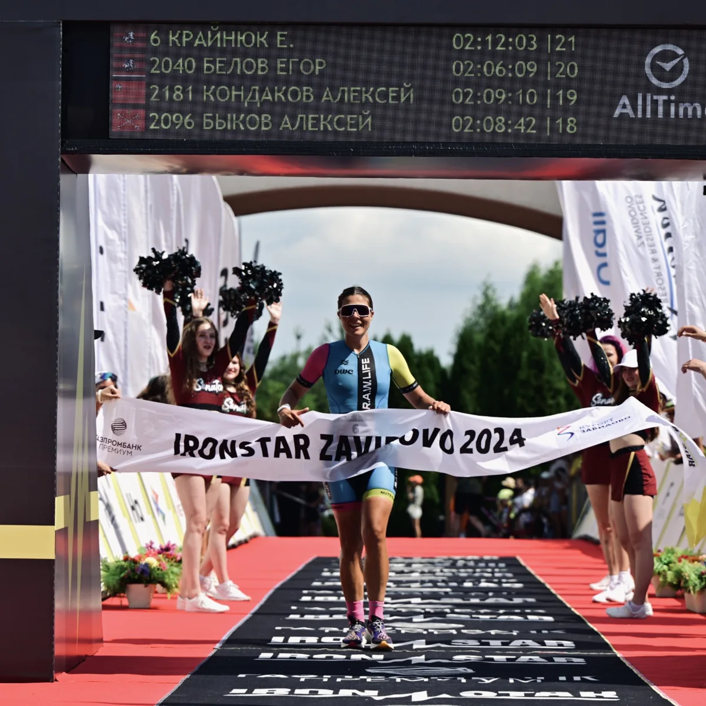
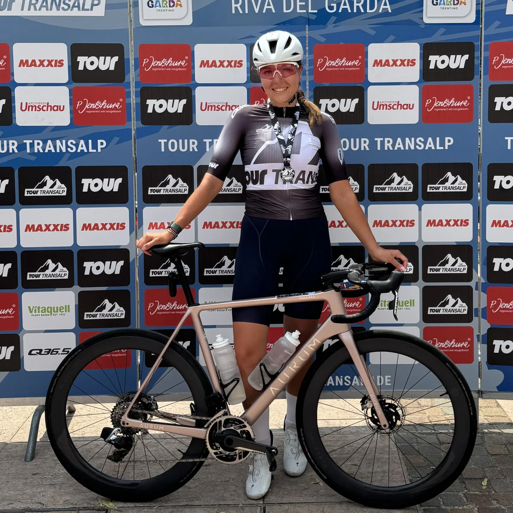

У плана есть место
для вашей жизни.
Работа, семья, отдых — всё это учитываю в подготовке. Составляю план под вашу неделю и меняю его, когда меняются обстоятельства.

От первых тренировок
до чемпионата мира по триатлону.
Помогаю интегрировать спорт в жизнь, получать удовольствие от процесса и результата.
Я спортсмен-любитель, прошедший путь от новичка до участника двух чемпионатов мира по триатлону. Больше 12 лет занимаюсь циклическими видами спорта: бегаю, плаваю, выступаю в велогонках и триатлоне.
В моём опыте — забеги от 5 до 50 километров, однодневные и многодневные велогонки, триатлон от суперспринта до экстрима, трейлы, заплывы и свимраны. В детстве выполнила норматив КМС по плаванию, позже отобралась на чемпионат мира по велоспорту серии Granfondo.
С 2019 года делюсь этим опытом со спортсменами. Я сертифицированный тренер по триатлону, плаванию и бегу — и продолжаю тренироваться и выступать сама.



Первый старт или новая дистанция, техника или регулярная подготовка — найдём формат под вашу задачу и ритм жизни.

Индивидуальный тренировочный план в TrainingPeaks или Intervals с учётом ваших целей, образа жизни и нагрузки по неделе. При необходимости корректируем план; вопросы и поддержка — часть нашей работы.
Обсудить сопровождение
Бег, плавание, велосипед, отработка транзитных зон, общая и специальная физическая подготовка. Для тех, кому нужен регулярный присмотр тренера и работа над техникой.
Для спортсменов на сопровождении — 4 000 ₽.
Договориться о тренировке
Очно или онлайн: разбираем технику на встрече или по видео, подбираем упражнения для самостоятельной работы. Можно обсудить трассу и стратегию гонки или структуру подготовки к целевому старту.
Структура подготовки без детализации тренировок подойдёт тем, кто уже знаком с микро- и макроциклами.
Записаться на консультацию
Тренировка с моей командой: бег, велосипед и отработка транзитных зон. Летом тренируемся в Лужниках, зимой — в манеже на велотреке в Крылатском.
Узнать о ближайшей тренировке
Очные групповые тренировки и общий план подготовки к командному старту. Формат и стоимость обсуждаем под задачу вашей команды.
Обсудить командную подготовку
Экстремальный триатлон, велогонки и заплывы. Для тех, кто задумал что-то особенное и хочет, чтобы рядом был опытный человек в команде.
Рассказать о своём старте
Организация тренировочных сборов в России и за рубежом — индивидуально или в группе. Место, программу и стоимость подбираем под ваши цели.
Обсудить сборыРабота, семья, отдых — всё это учитываю в подготовке. Составляю план под вашу неделю и меняю его, когда меняются обстоятельства.
Мне можно и нужно задавать вопросы. О подготовке, выборе старта, технике и уходе за велосипедом — отвечу и помогу разобраться.
У каждого свои исходные данные, цели и возможности. В моих тренировочных планах нет копипаста.
Регулярность, последовательность и плавная прогрессия. Строю подготовку с понятной структурой и опираюсь на собственный опыт спортсмена.
Прошла профессиональную переподготовку, училась у Игоря Сысоева, Натальи Скворчевской и Юрия Сдобникова. Регулярно посещаю семинары и применяю новые знания на практике.
Кому-то важен подиум. Кому-то — первый уверенный финиш или ощущение, что сил стало больше. Здесь — их собственные слова и результаты.

Три сезона. Одна дистанция.
Заметный прогресс.
| Год | Время | Место в возрастной группе |
|---|---|---|
| 2023 | 1:19:43 | 13 |
| 2024 | 1:17:34 | 7 |
| 2025 | 1:12:35 | 2 |
Также в 2025 году: 2-е место в возрастной группе на спринте Grom Крылатское (1:25:20) и 1-е место на спринте «Николов Перевоз» (1:20:15).
«Тренировки работают, общение и поддержка — супер. Нет слов, насколько всё позитивно. Спасибо тебе!»
 АлександрО подготовке и поддержке
АлександрО подготовке и поддержкеХочется подвести какой-то итог году и сказать тебе спасибо. Потому что прям всё хорошо, даже с учетом моей лени и халтуры, все запланированные важные старты вполне удались. И из самого конца списка участников я уверенно переполз в середину, и даже есть удовлетворение — начало что-то получаться! Тренировки работают, общение и поддержка — супер. Нет слов, насколько всё позитивно. Спасибо тебе!
«Но в целом, конечно, силищу чувствую по сравнению с тем, что было буквально месяца 3 назад) приятное чувство))»
 ДенисО прогрессе в тренировках
ДенисО прогрессе в тренировках— Но в целом, конечно, силищу чувствую по сравнению с тем, что было буквально месяца 3 назад) приятное чувство))
— Только спросить хотела по ощущениям как тебе, стало посильнее?
— Да, сто процентов. Ну и запас какой-то всё равно чувствуется. Думал, что all out ехал, но в конце даже немного осталось сил придавить.
«Прошло, считаю, неплохо. Выложился я прям хорошо вчера».
 ДмитрийПосле заплыва на 3 км
ДмитрийПосле заплыва на 3 кмЕкатерина, добрый вечер! Прошло, считаю, неплохо. Выложился я прям хорошо вчера. Время 1:01, но расстояние не известно и трека нет. Не только у меня, из-за атомной станции gps видимо глушится. Часы не работали нормально. Всего 64/138, мужском зачёте 49/84. В прошлом году было 86/111, 61/67 в мужском.
Или пока хочется
просто начать?
Расскажите, к чему хотите прийти. Обсудим ваш опыт, время на тренировки и подходящий формат. Я открыта к любым вопросам и предложениям.
Написать в Telegram +7 925 171-86-91